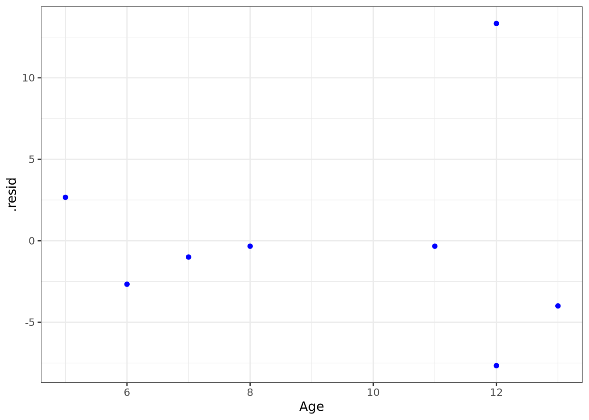
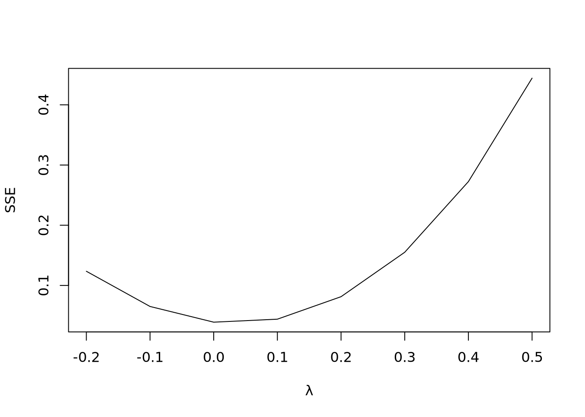
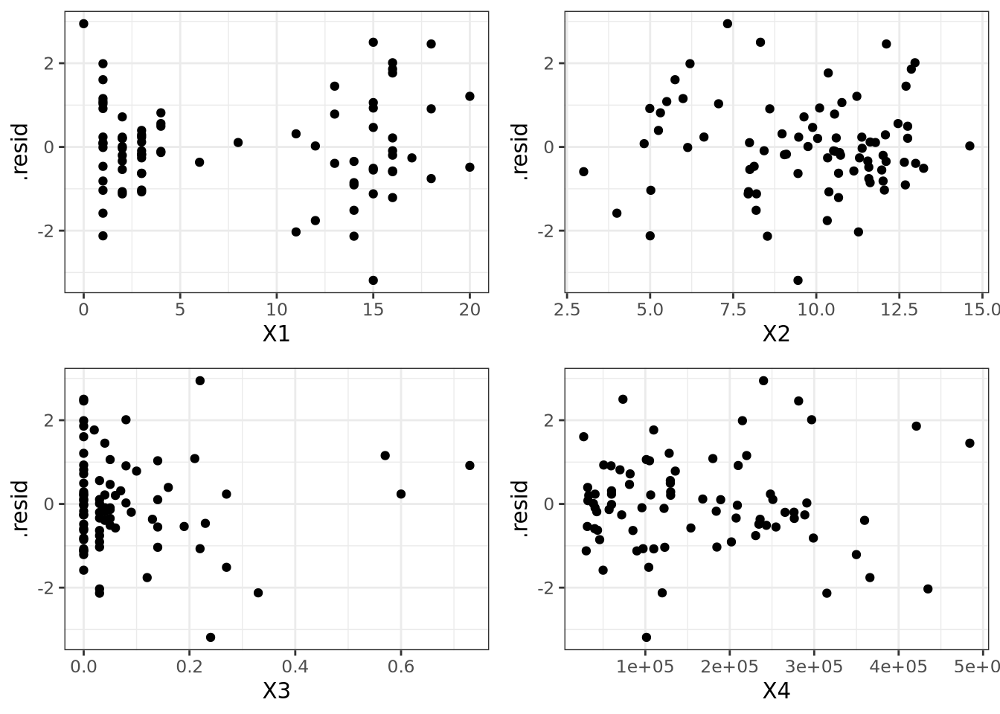

Exam 2
Sean Melia
11/11/2021
- A student stated: “Adding predictor variables to a regression model can never reduce R2, so we should include all available predictor variables in the model.” Comment:
The student’s statement about \(R^2\) increasing as the number of predictor variables in a model increases is correct, yet, erroneously assumes that a high \(R^2\) alone is indicative of a good model. Some predictor variables are not significant to the model, and when included in the Adjusted \(R^2\) statistic, for example, may yield a lower value than with fewer significant variables.
- Distinguish between:
- residual and semistudentized residual,
The residuals and semi studentized residuals are both the terms errors between predicted values and the observed actual values, yet the semistudentized residuals are calculated specifically to identify outliers in the data and delete them.
- \(E_{\epsilon}i = 0\) and \(\bar{e} = 0\),
\(E_{\epsilon}i = 0\) is the expected mean of the errors equal to 0, while \(\bar{e} = 0\) is the actual observed mean of errors
- Error term and residual.
Error terms represent the way observed data differs from the actual population. Residuals represent the way observed data differs from sample population data
- Set up the X matrix and β vector for each of the following regression models (assume i = 1 . . . 4):
- \(Yi = β0 + β1Xi1 + β2Xi1Xi2 + \epsilon_i\)
\[X = \begin{bmatrix} 1 & X_{11} & X_{11}X_{12} \\ 1 & X_{21} & X_{21}X_{22} \\ 1 & X_{31} & X_{31}X_{32} \\ 1 & X_{41} & X_{41}X_{42} \end{bmatrix}\] \[\beta = \begin{bmatrix} \beta_0 \\ \beta_1 \\ \beta_2 \end{bmatrix}\]
- \(logYi = β0 + β1Xi1 + β2Xi2 + \epsilon_i\)
\[X = \begin{bmatrix} 1 & X_{11} & X_{12} \\ 1 & X_{21} & X_{22} \\ 1 & X_{31} & X_{32} \\ 1 & X_{41} & X_{42} \end{bmatrix}\]
\[\beta = \begin{bmatrix} \beta_0 \\ \beta_1 \\ \beta_2 \end{bmatrix}\]
- The following data were obtained in a study of the relation between diastolic blood pressure (Y) and age (X) for boys 5 to 13 years old.
- Assuming normal error regression model is appropriate, obtain the estimated regression function.
xi <- c(5, 8, 11, 7, 13, 12, 12, 6)
yi <- c(63, 67, 74, 64, 75, 69, 90, 60)
bp <- data.frame(xi,yi)
colnames(bp) <- c("Age", "DBP")
bp## Age DBP
## 1 5 63
## 2 8 67
## 3 11 74
## 4 7 64
## 5 13 75
## 6 12 69
## 7 12 90
## 8 6 60library(Matrix)
n <- nrow(bp)X <- bp$Age
Y <- bp$DBP
Y <- as.matrix(Y)
Y## [,1]
## [1,] 63
## [2,] 67
## [3,] 74
## [4,] 64
## [5,] 75
## [6,] 69
## [7,] 90
## [8,] 60X <- as.matrix(X)
X <- cbind(rep(1,n), X)
X## [,1] [,2]
## [1,] 1 5
## [2,] 1 8
## [3,] 1 11
## [4,] 1 7
## [5,] 1 13
## [6,] 1 12
## [7,] 1 12
## [8,] 1 6bp_lm <- lm(DBP ~ Age, data = bp)
summary(bp_lm)##
## Call:
## lm(formula = DBP ~ Age, data = bp)
##
## Residuals:
## Min 1Q Median 3Q Max
## -7.6667 -3.0000 -0.6667 0.4167 13.3333
##
## Coefficients:
## Estimate Std. Error t value Pr(>|t|)
## (Intercept) 48.6667 7.8869 6.171 0.000832 ***
## Age 2.3333 0.8135 2.868 0.028487 *
## ---
## Signif. codes: 0 '***' 0.001 '**' 0.01 '*' 0.05 '.' 0.1 ' ' 1
##
## Residual standard error: 6.683 on 6 degrees of freedom
## Multiple R-squared: 0.5783, Adjusted R-squared: 0.508
## F-statistic: 8.228 on 1 and 6 DF, p-value: 0.02849library(ggplot2)
ggplot(bp, aes(x = Age, y = DBP)) +
geom_point() +
labs(x = "Age", y = "Diastolic Blood Pressure", title = "BP") +
geom_smooth(method = lm)## `geom_smooth()` using formula 'y ~ x'The estimated regressio function is Y = 48.6667 + 2.3333(Age)
- Plot the residuals ei against Xi. What does your residual plot show?
ggplot(bp_lm, aes(x = Age, y = .resid)) + geom_point(color = "blue", dotsize = .5) + theme_bw()## Warning: Ignoring unknown parameters: dotsize The plot shows that case 7 is an outlier, having a residual of nearly 15, while all of the other points appear to line up much closer to their expected values.
- Omit case 7 from the data and obtain the estimated regression function based on the remaining seven cases.
xi2 <- c(5, 8, 11, 7, 13, 12, 6)
yi2 <- c(63, 67, 74, 64, 75, 69, 60)
bp2 <- data.frame(xi2,yi2)
colnames(bp2) <- c("Age", "DBP")
bp2## Age DBP
## 1 5 63
## 2 8 67
## 3 11 74
## 4 7 64
## 5 13 75
## 6 12 69
## 7 6 60n <- nrow(bp2)
X <- bp2$Age
Y <- bp2$DBP
Y <- as.matrix(Y)
Y## [,1]
## [1,] 63
## [2,] 67
## [3,] 74
## [4,] 64
## [5,] 75
## [6,] 69
## [7,] 60X <- as.matrix(X)
X <- cbind(rep(1,n), X)
X## [,1] [,2]
## [1,] 1 5
## [2,] 1 8
## [3,] 1 11
## [4,] 1 7
## [5,] 1 13
## [6,] 1 12
## [7,] 1 6bp2_lm <- lm(DBP ~ Age, data = bp2)
summary(bp2_lm)##
## Call:
## lm(formula = DBP ~ Age, data = bp2)
##
## Residuals:
## 1 2 3 4 5 6 7
## 1.8252 0.9612 3.0971 -0.4175 0.8544 -3.5243 -2.7961
##
## Coefficients:
## Estimate Std. Error t value Pr(>|t|)
## (Intercept) 53.0680 3.2136 16.514 1.49e-05 ***
## Age 1.6214 0.3448 4.702 0.00533 **
## ---
## Signif. codes: 0 '***' 0.001 '**' 0.01 '*' 0.05 '.' 0.1 ' ' 1
##
## Residual standard error: 2.645 on 5 degrees of freedom
## Multiple R-squared: 0.8156, Adjusted R-squared: 0.7787
## F-statistic: 22.11 on 1 and 5 DF, p-value: 0.005327library(ggplot2)
ggplot(bp2, aes(x = Age, y = DBP)) +
geom_point() +
labs(x = "Age", y = "Diastolic Blood Pressure", title = "BP") +
geom_smooth(method = lm)## `geom_smooth()` using formula 'y ~ x'- Compare this estimated regression function to that obtained in part (a). What can you conclude about the effect of case 7?
The model without case 7 is much more nicely fit to the expected data, so we conclude that case 7 was a large outlier.
- Using your fitted regression function in part (c), obtain a 99 percent predictioninterval for a new Y observation at X = 12. Does observation Y7 fall outside this prediction interval? What is the significance of this?
xnew <- t(c(Age = 12, DBP = 72.525))
xnew <- data.frame(xnew)
xnew## Age DBP
## 1 12 72.525predict(bp2_lm, xnew, interval = "pred",level = .99)## fit lwr upr
## 1 72.52427 60.31266 84.73588Observation Y7 falls outside of the 99% prediction interval, which indcates that this obervation is much higher than in should be based on the estimated regresion function.
- A chemist studied the concentration of a solution (Y) over time (X). Fifteen identical solutions were prepared. The 15 solutions were randomly divided into five sets of three, and the five sets were measured, respectively, after 1, 3, 5, 7, and 9 hours. The results follow.
xi <- c(9, 9, 9, 7, 7, 7, 5, 5, 5, 3, 3, 3, 1, 1, 1)
yi <- c(0.07, 0.09, 0.08, 0.16, 0.17, 0.21, 0.49, 0.58, 0.53, 1.22, 1.15, 1.07, 2.84, 2.57, 3.10)
solution <- data.frame(xi,yi)
colnames(solution) <- c("Time", "Concentration")
solution## Time Concentration
## 1 9 0.07
## 2 9 0.09
## 3 9 0.08
## 4 7 0.16
## 5 7 0.17
## 6 7 0.21
## 7 5 0.49
## 8 5 0.58
## 9 5 0.53
## 10 3 1.22
## 11 3 1.15
## 12 3 1.07
## 13 1 2.84
## 14 1 2.57
## 15 1 3.10n <- nrow(solution)X <- solution$Time
Y <- solution$Concentration
Y <- as.matrix(Y)
Y## [,1]
## [1,] 0.07
## [2,] 0.09
## [3,] 0.08
## [4,] 0.16
## [5,] 0.17
## [6,] 0.21
## [7,] 0.49
## [8,] 0.58
## [9,] 0.53
## [10,] 1.22
## [11,] 1.15
## [12,] 1.07
## [13,] 2.84
## [14,] 2.57
## [15,] 3.10X <- as.matrix(X)
X <- cbind(rep(1,n), X)
X## [,1] [,2]
## [1,] 1 9
## [2,] 1 9
## [3,] 1 9
## [4,] 1 7
## [5,] 1 7
## [6,] 1 7
## [7,] 1 5
## [8,] 1 5
## [9,] 1 5
## [10,] 1 3
## [11,] 1 3
## [12,] 1 3
## [13,] 1 1
## [14,] 1 1
## [15,] 1 1- Prepare a scatter plot of the data. What transformation of Y might you try, usingthe prototype patterns learned in class to achieve constant variance and linearity?
solution_lm <- lm(Concentration ~ Time, data = solution)
summary(solution_lm)##
## Call:
## lm(formula = Concentration ~ Time, data = solution)
##
## Residuals:
## Min 1Q Median 3Q Max
## -0.5333 -0.4043 -0.1373 0.4157 0.8487
##
## Coefficients:
## Estimate Std. Error t value Pr(>|t|)
## (Intercept) 2.5753 0.2487 10.354 1.20e-07 ***
## Time -0.3240 0.0433 -7.483 4.61e-06 ***
## ---
## Signif. codes: 0 '***' 0.001 '**' 0.01 '*' 0.05 '.' 0.1 ' ' 1
##
## Residual standard error: 0.4743 on 13 degrees of freedom
## Multiple R-squared: 0.8116, Adjusted R-squared: 0.7971
## F-statistic: 55.99 on 1 and 13 DF, p-value: 4.611e-06ggplot(solution, aes(x = Time, y = Concentration)) +
geom_point() +
labs(x = "Time", y = "Concentration", title = "Solution") +
geom_smooth(method = lm)## `geom_smooth()` using formula 'y ~ x'The data appears to have a logarithmic or negative exponential relationship, so such a transformation seems most appropriate.
- Use the Box-Cox procedure and standardization to find an appropriate power transformation. Evaluate SSE for λ = −0.2, −0.1, 0, 0.1, 0.2 What transformation of Y is suggested?
library(ALSM)## Loading required package: leaps## Loading required package: SuppDists## Loading required package: car## Loading required package: carDataobj <- boxcox.sse(solution$Time, solution$Concentration, l=seq(-0.2, 0.5, 0.1))
obj## lambda SSE
## 1 -0.2 0.12353047
## 2 -0.1 0.06505067
## 8 0.0 0.03897303
## 3 0.1 0.04396062
## 4 0.2 0.08131793
## 5 0.3 0.15509932
## 6 0.4 0.27246179
## 7 0.5 0.44429368We would select \(\lambda = 0.0\) since \(\lambda_{0.0} = 0.03897303\) the minimum value.
- Use the transformation Y0 = log10Y and obtain the estimated linear regression function for the transformed data.
library(dplyr)##
## Attaching package: 'dplyr'## The following object is masked from 'package:car':
##
## recode## The following objects are masked from 'package:stats':
##
## filter, lag## The following objects are masked from 'package:base':
##
## intersect, setdiff, setequal, unionsolution <- solution %>%
mutate(log10Y = log10(Y))
log_lm <- lm(log10Y ~ X, solution)
log_lm##
## Call:
## lm(formula = log10Y ~ X, data = solution)
##
## Coefficients:
## (Intercept) X1 X2
## 0.6549 NA -0.1954- Plot the estimated regression line and the transformed data.
#ggplot(solution, aes(X, log10Y)) + geom_point() + labs(x= "Time", y = "Concentration") + geom_smooth(method = "lm", se = FALSE)- Does the regression line appear to be a good fit to the transformed data (Hint:perform a test to confirm your answer)?
Yes, yet the code in the above problem no longer runs.
- Obtain the residuals and plot them against the fitted values.
ggplot(solution_lm, aes(x = .fitted, y = .resid)) + geom_point(color = "blue", dotsize = .5) + theme_bw()## Warning: Ignoring unknown parameters: dotsize- Prepare a normal probability plot. What do your plots show?
ggplot(solution_lm, aes(sample = .resid)) + geom_qq(color = "blue") + geom_qq_line()+ theme_bw()- Express the estimated regression function in the original units.
Concentration = 2.5753 - 0.3240(Hours)
http://www.cnachtsheim-text.csom.umn.edu/Kutner/Chapter%20%206%20Data%20Sets/CH06PR18.txt
exam2 <- read.table("http://users.stat.ufl.edu/~rrandles/sta4210/Rclassnotes/data/textdatasets/KutnerData/Chapter%20%206%20Data%20Sets/CH06PR18.txt", sep="", header = FALSE)
colnames(exam2) <- c("Y", "X1", "X2", "X3", "X4")
exam2_df <- data.frame(exam2)
exam2## Y X1 X2 X3 X4
## 1 13.500 1 5.02 0.14 123000
## 2 12.000 14 8.19 0.27 104079
## 3 10.500 16 3.00 0.00 39998
## 4 15.000 4 10.70 0.05 57112
## 5 14.000 11 8.97 0.07 60000
## 6 10.500 15 9.45 0.24 101385
## 7 14.000 2 8.00 0.19 31300
## 8 16.500 1 6.62 0.60 248172
## 9 17.500 1 6.20 0.00 215000
## 10 16.500 8 11.78 0.03 251015
## 11 17.000 12 14.62 0.08 291264
## 12 16.500 2 11.55 0.03 207549
## 13 16.000 2 9.63 0.00 82000
## 14 16.500 13 12.99 0.04 359665
## 15 17.225 2 12.01 0.03 265500
## 16 17.000 1 12.01 0.00 299000
## 17 16.000 1 7.99 0.14 189258
## 18 14.625 12 10.33 0.12 366013
## 19 14.500 16 10.67 0.00 349930
## 20 14.500 3 9.45 0.03 85335
## 21 16.500 6 12.65 0.13 235932
## 22 16.500 3 12.08 0.00 130000
## 23 15.000 3 10.52 0.05 40500
## 24 15.000 3 9.47 0.00 40500
## 25 13.000 14 11.62 0.00 45959
## 26 12.500 1 5.00 0.33 120000
## 27 14.000 15 9.89 0.05 81243
## 28 13.750 16 11.13 0.06 153947
## 29 14.000 2 7.96 0.22 97321
## 30 15.000 16 10.73 0.09 276099
## 31 13.750 2 7.95 0.00 90000
## 32 15.625 3 9.10 0.00 184000
## 33 15.625 3 12.05 0.03 184718
## 34 13.000 16 8.43 0.04 96000
## 35 14.000 16 10.60 0.04 106350
## 36 15.250 13 10.55 0.10 135512
## 37 16.250 1 5.50 0.21 180000
## 38 13.000 14 8.53 0.03 315000
## 39 14.500 3 9.04 0.04 42500
## 40 11.500 15 8.20 0.00 30005
## 41 14.250 1 6.13 0.00 60000
## 42 15.500 15 8.32 0.00 73521
## 43 12.000 1 4.00 0.00 50000
## 44 14.250 15 10.10 0.00 50724
## 45 14.000 3 5.25 0.16 31750
## 46 16.500 3 11.62 0.00 168000
## 47 14.500 4 5.31 0.00 70000
## 48 15.500 1 5.75 0.00 27000
## 49 16.750 4 12.46 0.03 129614
## 50 16.750 4 12.75 0.00 129614
## 51 16.750 2 12.75 0.00 130000
## 52 16.750 2 11.38 0.00 209000
## 53 17.000 1 5.99 0.57 220000
## 54 16.000 2 11.37 0.27 60000
## 55 14.500 3 10.38 0.00 110000
## 56 15.000 15 10.77 0.05 101206
## 57 15.000 17 11.30 0.00 288847
## 58 16.000 1 7.06 0.14 105000
## 59 15.500 14 12.10 0.05 276425
## 60 15.250 2 10.04 0.06 33000
## 61 16.500 1 4.99 0.73 210000
## 62 19.250 0 7.33 0.22 240000
## 63 17.750 18 12.11 0.00 281552
## 64 18.750 16 12.86 0.00 421000
## 65 19.250 13 12.70 0.04 484290
## 66 14.000 20 11.58 0.00 234493
## 67 14.000 18 11.58 0.03 230675
## 68 18.000 16 12.97 0.08 296966
## 69 13.750 1 4.82 0.00 32000
## 70 15.000 2 9.75 0.03 38533
## 71 15.500 16 10.36 0.02 109912
## 72 15.900 1 8.13 0.23 236000
## 73 15.250 15 13.23 0.05 243338
## 74 15.500 4 10.57 0.04 122183
## 75 14.750 20 11.22 0.00 128268
## 76 15.000 3 10.34 0.00 72000
## 77 14.500 3 10.67 0.00 43404
## 78 13.500 18 8.60 0.08 59443
## 79 15.000 15 11.97 0.14 254700
## 80 15.250 11 11.27 0.03 434746
## 81 14.500 14 12.68 0.03 201930exam2_lm <- lm(Y ~ X1 + X2 + X3 + X4, data = exam2)
summary(exam2_lm)##
## Call:
## lm(formula = Y ~ X1 + X2 + X3 + X4, data = exam2)
##
## Residuals:
## Min 1Q Median 3Q Max
## -3.1872 -0.5911 -0.0910 0.5579 2.9441
##
## Coefficients:
## Estimate Std. Error t value Pr(>|t|)
## (Intercept) 1.220e+01 5.780e-01 21.110 < 2e-16 ***
## X1 -1.420e-01 2.134e-02 -6.655 3.89e-09 ***
## X2 2.820e-01 6.317e-02 4.464 2.75e-05 ***
## X3 6.193e-01 1.087e+00 0.570 0.57
## X4 7.924e-06 1.385e-06 5.722 1.98e-07 ***
## ---
## Signif. codes: 0 '***' 0.001 '**' 0.01 '*' 0.05 '.' 0.1 ' ' 1
##
## Residual standard error: 1.137 on 76 degrees of freedom
## Multiple R-squared: 0.5847, Adjusted R-squared: 0.5629
## F-statistic: 26.76 on 4 and 76 DF, p-value: 7.272e-14- Prepare a box plot for each predictor variable and prepare a grid of plot using the plot grid() function in the cowplot library.
library(cowplot)
X_1 <- ggplot(exam2_lm, aes(x = X1)) + geom_boxplot(color = "steelblue", fill = "orchid4") + theme_bw()
X_2 <- ggplot(exam2_lm, aes(x = X2)) + geom_boxplot(color = "steelblue", fill = "orchid4") + theme_bw()
X_3 <- ggplot(exam2_lm, aes(x = X3)) + geom_boxplot(color = "steelblue", fill = "orchid4") + theme_bw()
X_4 <- ggplot(exam2_lm, aes(x = X4)) + geom_boxplot(color = "steelblue", fill = "orchid4") + theme_bw()
plot_grid(X_1, X_2, X_3, X_4)- What information do these plots provide?
These plots show us the symmetry of the data per predictor variable, whether or not it’s skewed, if any potential outliers exist, the median, and the interquartile range.
- Obtain the scatter plot matrix and the correlation matrix.
colnames(exam2_df) <- c("Y", "X1", "X2", "X3", "X4")
pairs(exam2_df)cor(exam2_df)## Y X1 X2 X3 X4
## Y 1.00000000 -0.2502846 0.4137872 0.06652647 0.53526237
## X1 -0.25028456 1.0000000 0.3888264 -0.25266347 0.28858350
## X2 0.41378716 0.3888264 1.0000000 -0.37976174 0.44069713
## X3 0.06652647 -0.2526635 -0.3797617 1.00000000 0.08061073
## X4 0.53526237 0.2885835 0.4406971 0.08061073 1.00000000- Interpret these and state your principal findings in detail.
The relationship between Y and X4 was the strongest of the 4, though still only with a correlation coefficient of 0.53526237. The next strongest relationship was Y and X2 with a correlation coefficient of 0.41378716. Y had very weak correlation to X3, and a weak negative correlation with X1
- Fit regression model for four predictor variables to the data. State the estimated regression function.
exam2_lm <- lm(Y ~ X1 + X2 + X3 + X4, data = exam2)
summary(exam2_lm)##
## Call:
## lm(formula = Y ~ X1 + X2 + X3 + X4, data = exam2)
##
## Residuals:
## Min 1Q Median 3Q Max
## -3.1872 -0.5911 -0.0910 0.5579 2.9441
##
## Coefficients:
## Estimate Std. Error t value Pr(>|t|)
## (Intercept) 1.220e+01 5.780e-01 21.110 < 2e-16 ***
## X1 -1.420e-01 2.134e-02 -6.655 3.89e-09 ***
## X2 2.820e-01 6.317e-02 4.464 2.75e-05 ***
## X3 6.193e-01 1.087e+00 0.570 0.57
## X4 7.924e-06 1.385e-06 5.722 1.98e-07 ***
## ---
## Signif. codes: 0 '***' 0.001 '**' 0.01 '*' 0.05 '.' 0.1 ' ' 1
##
## Residual standard error: 1.137 on 76 degrees of freedom
## Multiple R-squared: 0.5847, Adjusted R-squared: 0.5629
## F-statistic: 26.76 on 4 and 76 DF, p-value: 7.272e-14Y = 1.220e+01 - -1.420e-01(X1) + 2.820e-01(X2) + 6.193e-01(X3) + 7.924e-06(X4)
- Obtain the residuals and prepare a box plot of the residuals.
ggplot(exam2_lm, aes(x = .fitted, y = .resid)) + geom_point(color = "blue", dotsize = .5) + theme_bw()## Warning: Ignoring unknown parameters: dotsizeggplot(exam2_lm, aes(x = .resid)) + geom_boxplot(color = "steelblue", fill = "orchid4") + theme_bw()- Does the distribution appear to be fairly symmetrical?
The distribution appears to be fairly symmetrical.
- Plot the residuals against Yˆ , each predictor variable, and each two-factor interaction term on a grid of plot using the plot grid() function in the cowplot library.
X_1r <- ggplot(exam2_lm, aes(x = X1, y = .resid)) + geom_point() + theme_bw()
X_2r <- ggplot(exam2_lm, aes(x = X2, y = .resid)) + geom_point() + theme_bw()
X_3r <- ggplot(exam2_lm, aes(x = X3, y = .resid)) + geom_point() + theme_bw()
X_4r <- ggplot(exam2_lm, aes(x = X4, y = .resid)) + geom_point() + theme_bw()
plot_grid(X_1r, X_2r, X_3r, X_4r)
Lasanthi Watagoda
Assistant Professor of Statistics
lasanthi@appstate.edu


Mailing Address
Appalachian State University
Department of Mathematical Sciences
Walker Hall 340
121 Bodenheimer Dr
Boone, NC 28608